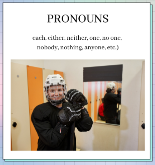
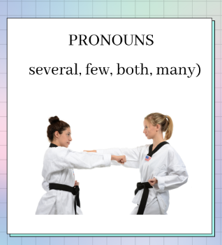
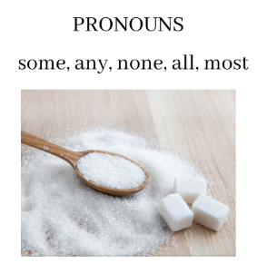
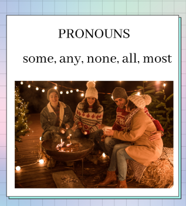
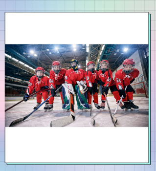

Pronoun-Antecedent Agreement
|
First things first, what is a pronoun, and what is an antecedent? A pronoun is a word that takes the place of a noun. For example,
In writing, it is important to note that a pronoun must agree with its antecedent. |
Antecedent
For example, in the sentence:
- “Mr. Mayer uses his guitar daily.”
In this example, the pronoun “his” stands for “Mr. Mayer”
In the sentence: “Mr. Miyagi taught his pupils how to wash cars.”
Which is the pronoun and which is the antecedent?
But first, it’s important to know that there are different types of personal pronouns, and there are different ways you can use them depending on what or who you are describing.
| Person | Subject Pronouns | Object Pronouns | Possessive Pronouns |
| First-person singular | I (me) | me | my, mine |
| Second-person singular | you | you | your, yours |
| Third-person singular | he, she, it | him, her, it | his, her, hers, its |
| First-person plural | we | us | our, ours |
| Second-person plural | you | you | your, yours |
| Third-person plural | they | them | their, theirs |
|
In using pronouns, there’s also a formula.
|
Aside from that, there are also basic rules to follow.
|
If there is a phrase or a clause between the subject and the verb, it does not change the form of the antecedent. For example,
In this example, a singular antecedent uses a singular pronoun. |
Indefinite pronoun antecedents use pronouns depending on their number.

|
If an antecedent is singular, then the pronoun should also be singular (e.g. each, either, neither, one, no one, nobody, nothing, anyone, etc.). For example,
|

|
If an antecedent is plural, then the pronoun should also be plural (e.g. several, few, both, many). For example,
|


|
Some antecedents have indefinite pronouns that are modified by a prepositional phrase or clause (e.g. some, any, none, all, most). If the object of the preposition is countable, you use a plural pronoun, For example,
|
Compound subjects
If compound subjects are joined by an “and” the pronoun is always plural.
For example,
- John and Mayer submitted their project.
If compound subjects are joined by “or/nor”, the pronoun agrees with the antecedent closer to it.
For example,
- Neither John nor his classmates submitted their assignments.
- Neither the class nor the teacher did his or her assigned tasks.
Collective Nouns
Collective Nouns can either be singular or plural depending on the meaning of the subject.
For example, if the meaning of the antecedent describes something singular or acts as a single unit, then you use a singular pronoun.
- The crowd learned its lesson.

On the other hand, if the antecedent describes something that isn’t acting as a single unit, a plural pronoun is used.
- The hockey team members fought among themselves.
Titles of single units use a singular pronoun.

American Gods made its TV debut 2 years ago.
Antecedents (subjects) with a plural form but singular meaning use a singular pronoun.
For example,
- Measles takes its name from “Maselen” which means many different spots.
If you use “every”, or “many a” before any noun/s, you use a singular pronoun.
For example,
- Every fish in the sea uses its gills to breathe.
- Every monkey, zebra, and horse in the zoo got out of its cage.
If you use “The number of” or “A number of” before the antecedent, the number of its pronouns will be singular or plural respectively.
For example,
- The number of reviews increases its credibility. (singular)
- A number of people are offering their help. (plural)